Basic attack cycle review
10 October 2026 · Five protagonists · Deterministic animation cycles.
| Character | Repeating sequence | Ratio |
|---|
| Shadow Monarch | Diagonal dagger cut → reverse cut → thrust | 2 cuts : 1 thrust |
| Light Swordswoman | Descending cut → rising cut | 1 : 1 |
| White Tiger Brawler | Claw rake → backhand rake | 1 : 1 |
| Flame Mage | Forward palm ×2 → palm lift | 2 : 1 |
| Sanctuary Healer | Forward channel ×2 → raised blessing | 2 : 1 |
The cycle advances once per emitted attack, including extra attacks gained through levels. Damage, cooldowns, attack counts and ranges retain their existing values. Skills use their existing body tracks and do not advance the basic attack cycle. Reduced-motion mode retains the same attack timing.
Higgsfield MCP generated 18 four-pose body strips and the final six-stage dagger trail. Extraction adds 144 directional body frames and six VFX frames, each with lossless PNG/WebP pairs. Left-facing frames mirror complete right-facing poses. Each body strip uses one scale calibrated to its existing ready pose, and ends on the existing recovery frame. The new dagger trail has a +X forward axis and a narrower rendered height. The front-facing mage poses are mirrored individually to preserve the established staff hand.
The first dagger cut was rejected after visual feedback: its broad white surface and smooth pale crescent did not match the existing thrust. The replacement was generated with the actual thrust PNG as its image reference. It retains saturated purple filaments, narrow bright cores, torn trailing strands and dark gaps, with six distinct growth and dissipation stages.
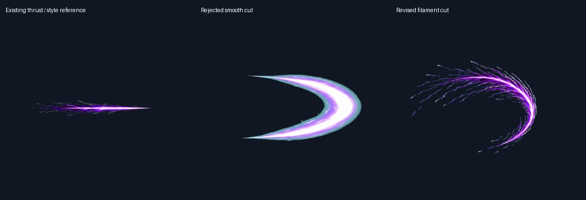
Body prompts, reference IDs and generation records · Dagger effect prompt and generation record
Shadow Monarch — bodies and runtime cycle
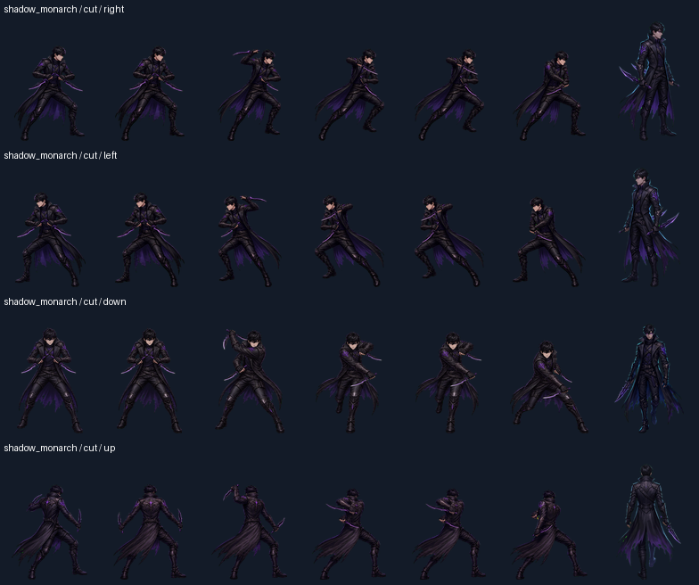
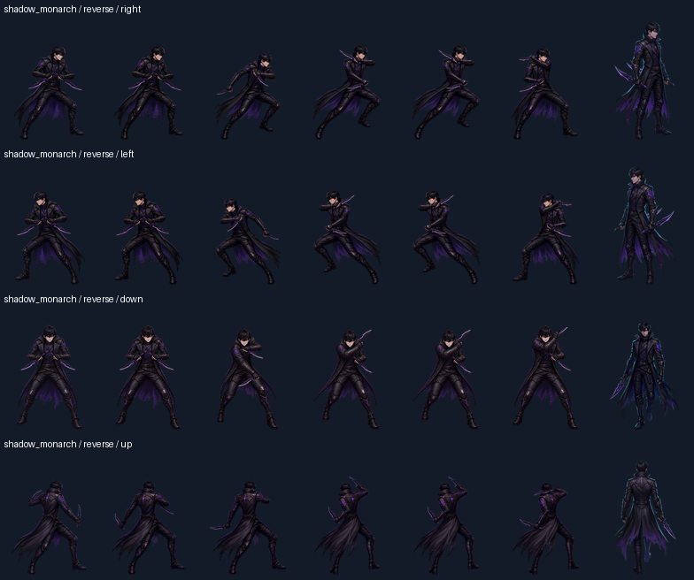
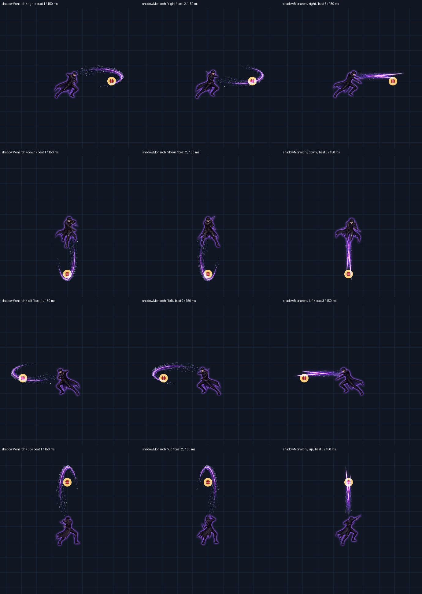
Light Swordswoman — bodies and runtime cycle
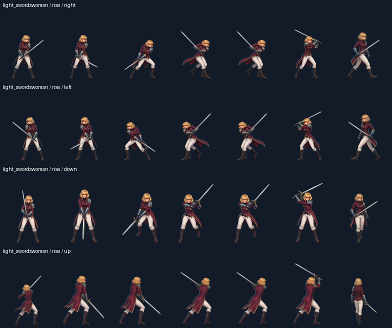
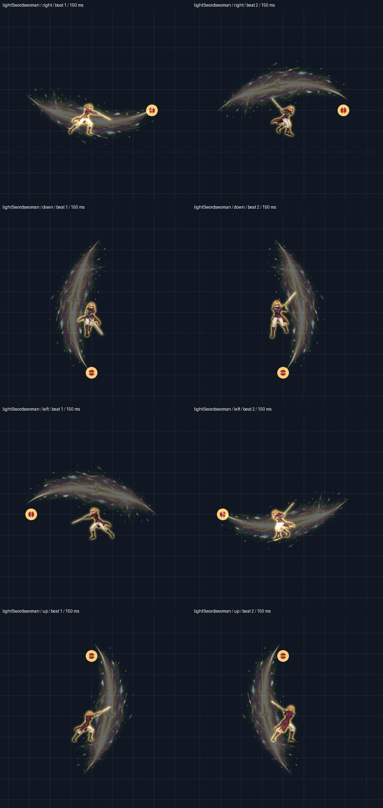
White Tiger Brawler — bodies and runtime cycle
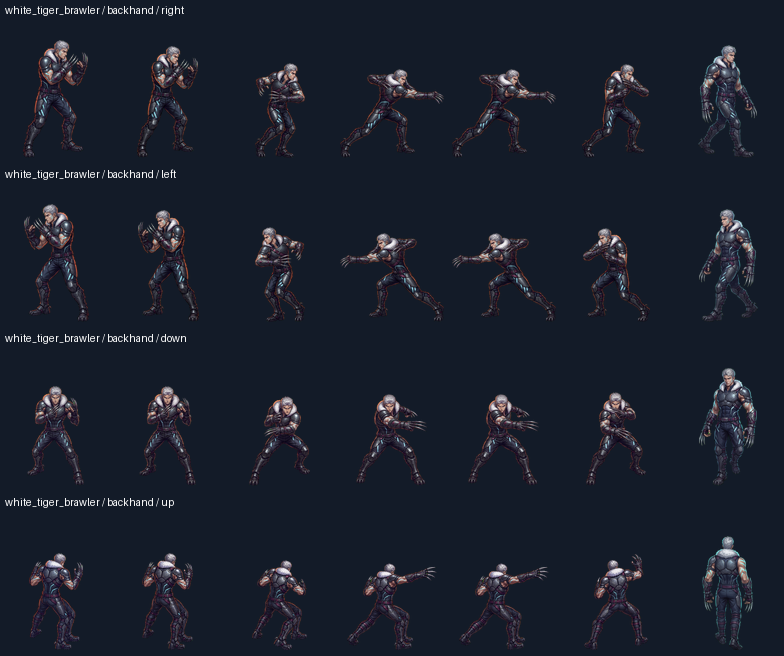
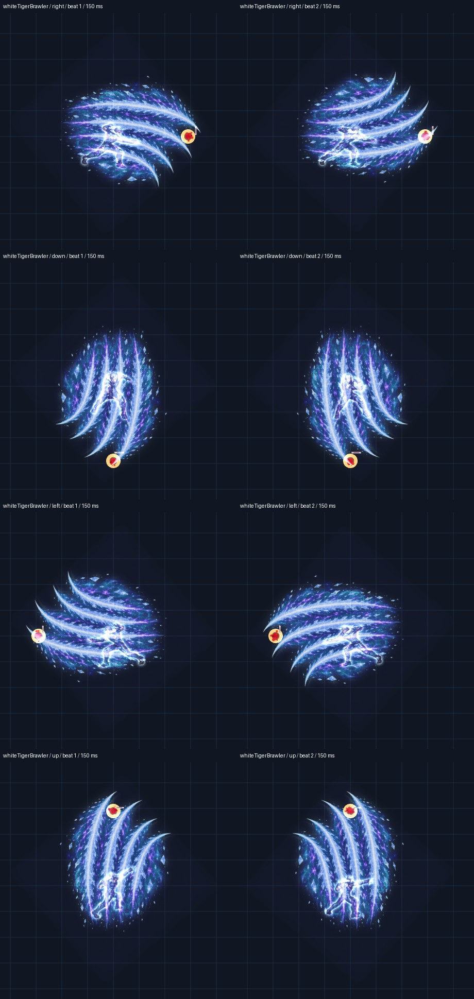
Flame Mage — bodies and runtime cycle
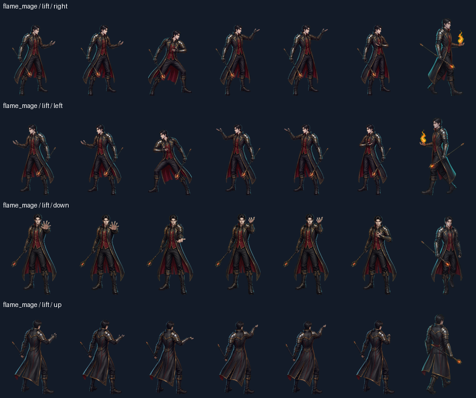
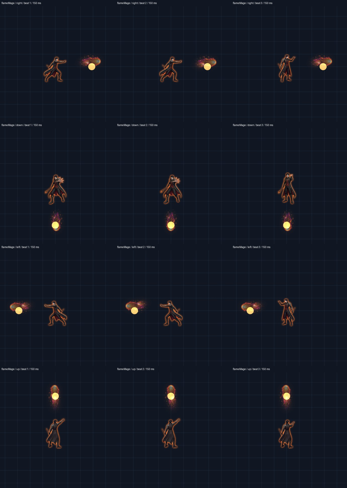
Sanctuary Healer — bodies and runtime cycle
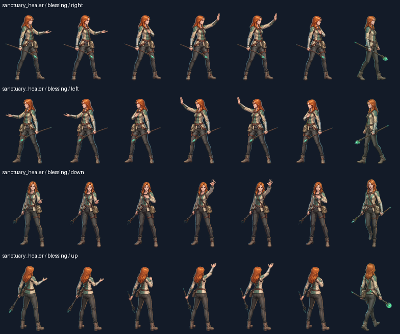
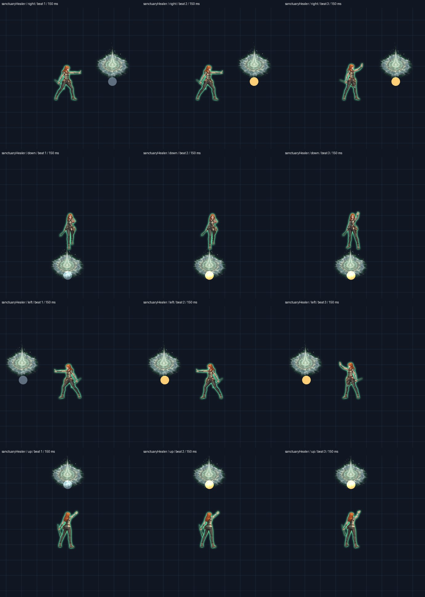
Body sheets: first column is the existing ready pose, followed by six new runtime frames. Runtime panels: 150 ms snapshots from a fixed 60 Hz capture, one complete cycle in each of four directions. Target dummies retain their hit color between beats.
Verification: production weapon and Player classes, all 52 cycle beats across five characters and four directions; automated order checks over 12 attacks per character, extra-attack cadence, dead-player suppression, skill interruption, missing-track fallback and dagger hit parity; pixel/alpha, mirror, recovery and motion-variance checks for 484 body frame pairs; all 156 VFX frames. Korean dagger description reviewed independently with humanize-korean and synchronized with English/Japanese translations.
Viewport checks: 320×568, 360×640, 390×844, 430×932, 768×1024, 1024×768, 1440×900, 1920×1080, 568×320, 844×390 and 932×430. Canvas, iframe and document scroll dimensions matched at every size. A shortened 390×764 viewport also passed. Title, character selection and upgrade dialogs were inspected; live gameplay was reviewed on phone, tablet, desktop and landscape sizes.
Captured attack order and texture keys · Independent Korean description review
Viewport checks use browser iframe sizes and mouse/keyboard input. They do not constitute physical touch-device or hardware safe-area certification. This page records the implementation review; release status is tracked by the main-branch deployment.